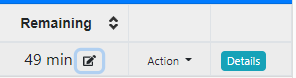
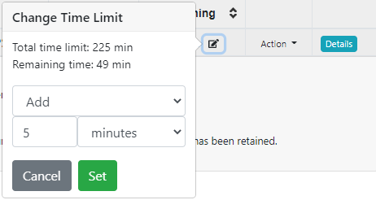
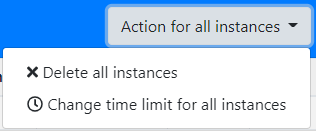

PrairieLearn now allows instructors and proctors to change the time limit of active assessments. This change allows instructors to fix time limit misconfigurations, add extra time due to logistical issues, or provide last-minute concessions to invidual students. Changes can be done to individual students or to all students.
To change the time limit, open the Student tab for the assessment. Time limits for individual students can be changed using the edit button () in the "Remaining" column, as shown below:

The button above will provide instructors with an option to choose how to change the assessment time limit. Instructors may add or subtract time, set the total time limit (based on when the student started the assessment), or set the remaining time limit (from the current time). Instructors may also remove the time limit altogether, providing students unlimited time to complete the assessment. Instructors also have the ability to "Expire" the time limit, effectively causing the student to be unable to submit any further answer.

To change the time limit for all students currently taking the assessment, the button "Action for all instances" provides an interface to change all instances, with similar options:

Changes can be done based on a specific number of minutes, or based on a percentage of the current time limit. The percentage option is recommended for assessments with time-based concessions (e.g., students with 50% extra time), since it allows these students to maintain the same ratio of additional time.
Want to help make PrairieLearn better? It's open source and contributions are welcome!